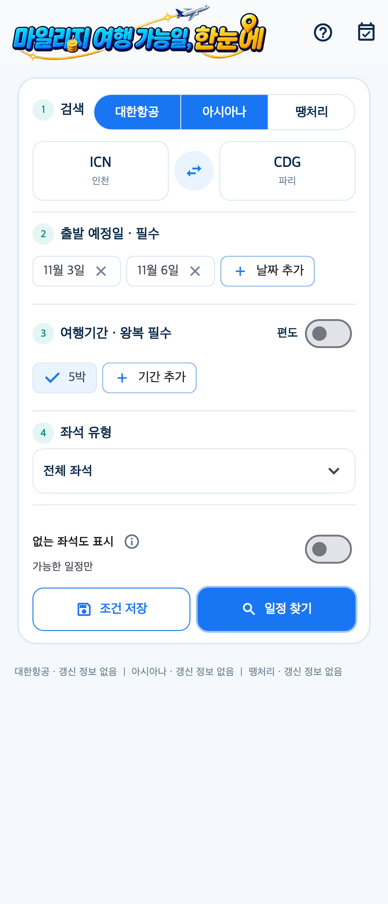
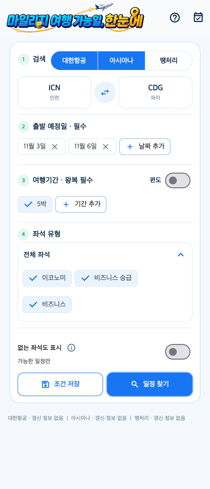
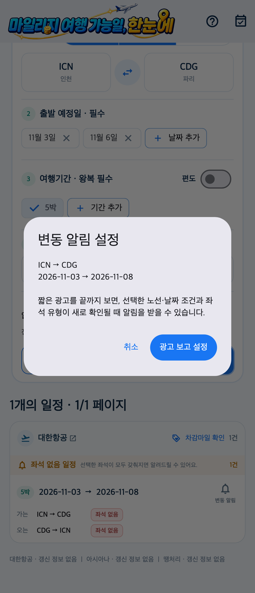

01 / SEARCH여러 날짜와 기간을
여러 날짜와 기간을
한 번에 비교하세요.
출발일을 하나씩 바꿔 검색할 필요 없이 여러 출발일과 목적지, 여행 기간을 조합할 수 있습니다. 1박부터 60박까지, 편도와 왕복 일정을 여행 계획에 맞게 골라보세요.
대한항공·아시아나항공 지원대한항공·아시아나 마일리지 항공권 검색
날짜를 하루씩 바꾸며 찾고 계신가요?
여러 출발일과 여행 기간을 조합해
내 마일리지로 떠날 수 있는 일정을 찾아보세요.
회원가입 없이 검색 · 앱 내 광고 포함

하나의 날짜 대신,
여러 여행 가능성을.
여행 일정 찾기부터 알림까지
출발일을 하나씩 바꿔 검색할 필요 없이 여러 출발일과 목적지, 여행 기간을 조합할 수 있습니다. 1박부터 60박까지, 편도와 왕복 일정을 여행 계획에 맞게 골라보세요.
대한항공·아시아나항공 지원이코노미, 비즈니스 마일리지 좌석과 비즈니스 승급 가능 일정을 구분해 검색하세요. 필요한 마일리지를 확인하고 항공사 공식 예약 페이지로 이동할 수 있습니다.
좌석 유형을 선택해 검색
원하는 일정에 좌석이 없다면 관심 조건의 변동 알림을 설정해 보세요. 조건 저장 기능으로 다음 검색도 간편하게 이어갈 수 있습니다.
알림 설정 시 광고 시청이 필요할 수 있습니다. 알림은 좌석 확보나 발권을 보장하지 않습니다.
내 여행 조건으로 알림 설정
이렇게 이용하세요
항공사·노선·출발일·여행 기간과 좌석 유형을 선택합니다.
검색 결과를 비교하고 관심 일정의 좌석 알림을 설정합니다.
좌석과 필요 마일리지를 다시 확인하고 항공사에서 예약합니다.
마일스캔에서 항공사, 출발지와 목적지, 출발일, 여행 기간 및 좌석 유형을 선택해 검색하세요. 검색 결과를 참고해 가능한 일정을 비교하고 항공사 공식 예약 페이지에서 최종 확인할 수 있습니다.
네. 여러 출발일과 목적지, 1박부터 60박까지의 여행 기간을 조합할 수 있습니다. 편도와 왕복 일정을 지원합니다.
비즈니스 보너스 좌석은 마일리지 항공권을 찾는 유형이고, 비즈니스 승급은 승급 가능 일정을 찾는 유형입니다. 승급 가능한 유상 항공권의 운임 조건과 필요 마일리지는 항공사 공식 안내에서 확인해 주세요.
알림은 관심 조건에 맞는 좌석 변동을 확인하는 데 도움을 주며 좌석을 확보하거나 예약하지 않습니다. 확인 시점에 좌석이 달라질 수 있으므로 항공사 공식 페이지에서 잔여 좌석과 발권 조건을 확인해 주세요.
회원가입이나 로그인 없이 검색할 수 있습니다. 앱은 무료로 다운로드할 수 있고 앱 내 광고가 포함되어 있습니다. 관심 일정의 알림 설정 과정에서 광고 시청이 필요할 수 있습니다.
아닙니다. 마일스캔(Milescan)은 대한항공 또는 아시아나항공의 공식 앱이 아닌 독립적인 검색 도구입니다. 항공권을 직접 판매·예약·결제하지 않습니다.